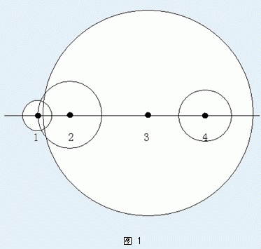

扫雷是陆军战场上一项重要的而危险的任务。为此，AL 军工厂专门研制了一种扫雷机器人。这种机器人是专门针对直线形雷阵设计的。所谓直线形雷阵，就是所有的地雷都埋在同一条直线上。例如图 $1$ 中黑点表示的雷阵就是直线形雷阵。

AL 军工厂生产的扫雷机器人的排雷方法只有一种，那就是安全引爆。每次，机器人在所有探测到的地雷中选择一颗引爆。被引爆的地雷会接连引爆不超过它的爆炸威力范围的其它地雷，这些被间接引爆的地雷还能引起进一步的连锁爆炸。例如图 $1$ 中，用一个圆的半径表示地雷的爆炸威力。如果引爆 $2$ 号雷，$1$、$2$ 号雷都会爆炸；如果引爆 $3$ 号雷，$4$ 颗地雷全都会爆炸；而如果引爆 $4$ 号雷，那就只有它一颗爆炸。
虽然是机器人，但引爆也是危险的。所以，扫雷机器人的订购人希望机器人能在实战中采取引爆次数尽可能少的排雷方案，即引爆次数尽可能少使得所有地雷都爆炸。于是 AL 军工厂想就此方面对机器人进行测试。为了评估机器人的表现，AL 军工厂想知道在一个直线形雷阵（即输入的）完成排雷，至少要进行多少次引爆，至多要进行多少次引爆。现在，请你帮助 AL 军工厂回答这个问题。
输入的第一行是一个正整数 $n$，表示地雷的个数。
接下去 $n$ 行，按照地雷的位置顺序，每行描述一颗地雷。其中，第 $i+1$ 行有两个整数，$X_i,D_i$，分别是地雷的坐标和地雷的爆炸威力。也就是说，第 $i$ 号地雷的爆炸能直接进一步引爆第 $j$ 号地雷的条件是 $|x_i-y_i| \le D_i$
输入保证：$|X_i| \le 10^8,1 \le D_i \le 10^8$，且当 $i<j$ 时，$X_i<Y_i$
输出只有两行，每行一个整数。第一行的是最少引爆次数，第二行的是最大引爆次数。
4 0 1 2 2 8 7 11 2
1 4
$N \le 10^6$
本题数据不足。
 Comet OJ
Comet OJ